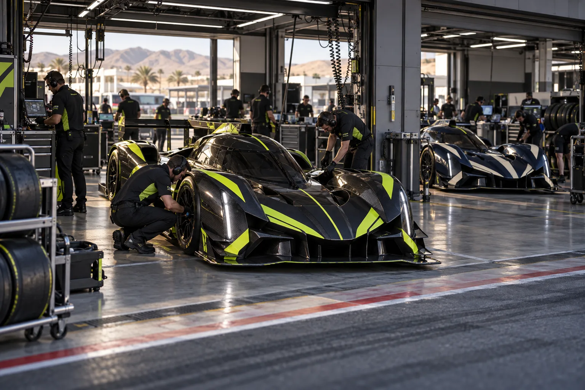

ONE CHASSIS.
All eight teams compete with the IR-32 platform. Setup, strategy and driving make the difference.
An all-electric racing championship imagined entirely across the landscapes of Morocco.
One purpose-built electric chassis. Sixteen of the world's most determined competitors. Eight races across an extraordinary country.
IONRUSH is a fictional sports universe designed to explore what the next generation of motorsport could feel like. Every team, driver, circuit, result and event belongs to this original imagined championship.
A focused sporting format built around precision and energy.
All eight teams compete with the IR-32 platform. Setup, strategy and driving make the difference.
Each fictional round features practice, a timed qualifying session, and a main race.
The top ten finishers score 25, 18, 15, 12, 10, 8, 6, 4, 2 and 1 points.
Drivers accumulate individual points. Team points combine both drivers across all eight rounds.

The race begins long before the lights go out.
Engineering, teamwork and split-second judgement turn electric power into position on the circuit.
MEET THE TEAMS ↗